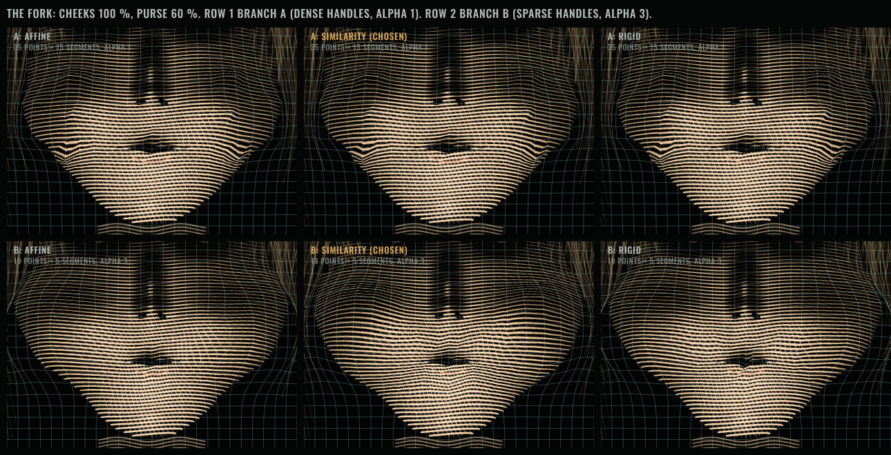
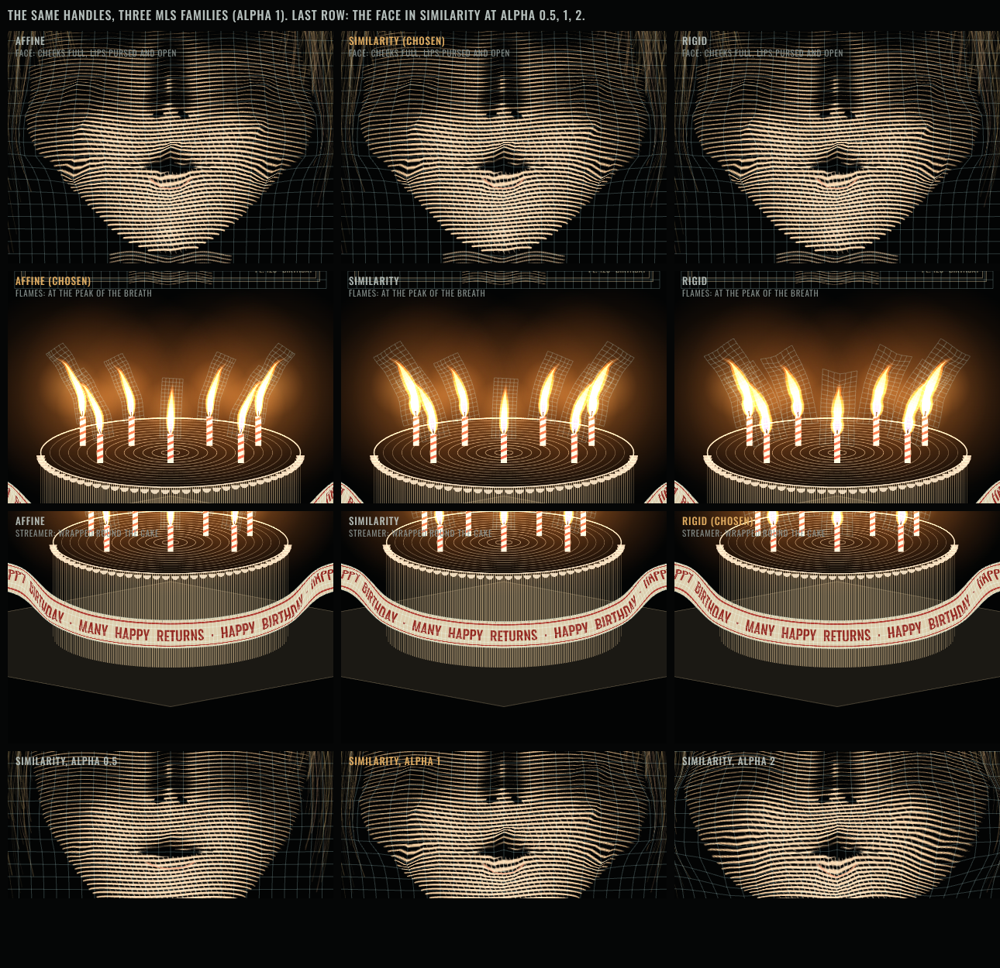

Swarm: MLS deformation (after Schaefer, McPhail & Warren 2006). Revision r4: the face was forked and branch B (sparse face, alpha 3) is promoted. 2026-11-06. Not committed.
Branch B. Ten seconds, 30 fps, with sound. Left panel: your world (face similarity, flames affine, streamer rigid). The other three: the same inputs with one family on every surface. Below: the memory maker's device, played by the demonstration.
Play it: the device is the controller. SELECT picks the thing, the knurled ring sets its value, HOLD blows. She leans: aim about two detents to correct it.

| Cheeks 100 %, purse 60 %: plate border / neck movement (chosen face family) | 0.07 / 0.24 px |
| Cheek outline moves outward when the cheeks fill | 21 px |
| Outer cheek outline, largest difference between face families (needs 4) | 0.95 px |
| Folded triangles, chosen families (face / flames / streamer) | 0 / 0 / 0 |
| Smallest triangle area ratio, chosen (floor 0.05): face / flames / streamer | 0.035 / 0.010 / 0.132 |
| Contour reversals not caused by a handle, chosen | 1 frame (a flame's fade-out) |
| Machine: rate; film frames with two steps | 11.79 /s; 0 |
| Ring settings that win in one breath; maxing every ring | 6 of 143; 4-5 out |
| Most candles out in one breath by flame family: affine / similarity / rigid | 7 / 2 / 0 |
| Point handles on target; line-handle samples off target | 0.000 px; 0.36 px |

gameproof.mp4strip.pnghandles.jsontests.jsonREADMEcritic round 1forkfork.mp4dense.html (A)tests (B)handles (B)solverhandles and posesgame
Rights: the face, flames, streamer and cake are drawn by code on this page. Device sounds are ana/device-sounds.wav (already in the repo). No film frames or film audio are used or published.